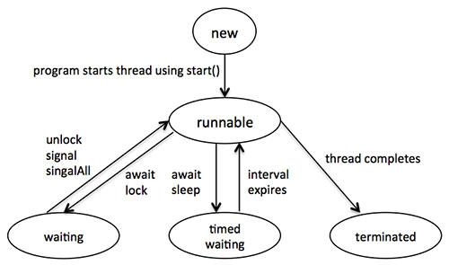

Java Multithreading
Java is amultithreaded
programming language which means we can develop multithreaded program using
Java. A multithreaded program contains two or more parts that can run
concurrently and each part can handle different task at the same time making
optimal use of the available resources specially when
your computer has multiple CPUs.
By definition multitasking is when
multiple processes share common processing resources such as a CPU.
Multithreading extends the idea of multitasking into applications where you can
subdivide specific operations within a single application into individual
threads. Each of the threads can run in parallel. The OS divides processing
time not only among different applications, but also among each thread within
an application.
Multithreading enables you to write
in a way where multiple activities can proceed concurrently in the same
program.
Life Cycle of a Thread:
A thread goes through various stages
in its life cycle. For example, a thread is born, started, runs, and then dies.
Following diagram shows complete life cycle of a thread.

Above-mentioned stages are explained
here:
Thread Priorities:
Every Java thread has a priority
that helps the operating system determine the order in which threads are scheduled.
Java thread priorities are in the
range between MIN_PRIORITY (a constant of 1) and MAX_PRIORITY (a constant of
10). By default, every thread is given priority NORM_PRIORITY (a constant of
5).
Threads with higher priority are
more important to a program and should be allocated processor time before
lower-priority threads. However, thread priorities cannot guarantee the order
in which threads execute and very much platform dependentant.
Create Thread by Implementing Runnable Interface:
If your class is intended to be
executed as a thread then you can achieve this by implementing Runnable
interface. You will need to follow three basic steps:
Step
1:
As a first step you need to
implement a run() method provided by Runnable
interface. This method provides entry point for the thread and you will put you
complete business logic inside this method. Following is simple syntax of run() method:
public void run( )
Step
2:
At second step you will instantiate
a Thread object using the following constructor:
Thread(Runnable threadObj, String threadName);
Where, threadObj
is an instance of a class that implements the Runnable interface and threadName is the name given to the new thread.
Step
3
Once Thread object is created, you
can start it by calling start( ) method,
which executes a call to run( ) method. Following is simple syntax of start() method:
void start( );
Example:
Here is an example that creates a
new thread and starts it running:
class RunnableDemo implements Runnable { private Thread t; private String threadName; RunnableDemo( String name){ threadName = name; System.out.println("Creating " + threadName ); } public void run() { System.out.println("Running " + threadName ); try { for(int i = 4; i > 0; i--) { System.out.println("Thread: " + threadName + ", " + i); // Let the thread sleep for a while. Thread.sleep(50); } } catch (InterruptedException e) { System.out.println("Thread " + threadName + " interrupted."); } System.out.println("Thread " + threadName + " exiting."); } public void start () { System.out.println("Starting " + threadName ); if (t == null) { t = new Thread (this, threadName); t.start (); } } } public class TestThread { public static void main(String args[]) { RunnableDemo R1 = new RunnableDemo( "Thread-1"); R1.start(); RunnableDemo R2 = new RunnableDemo( "Thread-2"); R2.start(); } }
This would produce the following
result:
Creating Thread-1
Starting Thread-1
Creating Thread-2
Starting Thread-2
Running Thread-1
Thread: Thread-1, 4
Running Thread-2
Thread: Thread-2, 4
Thread: Thread-1, 3
Thread: Thread-2, 3
Thread: Thread-1, 2
Thread: Thread-2, 2
Thread: Thread-1, 1
Thread: Thread-2, 1
Thread Thread-1 exiting.
Thread Thread-2 exiting.
Create
Thread by Extending Thread Class:
The second way to create a thread is
to create a new class that extends Thread class using the following two
simple steps. This approach provides more flexibility in handling multiple
threads created using available methods in Thread class.
Step
1
You will need to override run( ) method available in Thread class. This
method provides entry point for the thread and you will put you complete
business logic inside this method. Following is simple syntax of run() method:
public void run( )
Step
2
Once Thread object is created, you
can start it by calling start( ) method,
which executes a call to run( ) method. Following is simple syntax of start() method:
void start( );
Example:
Here is the preceding program
rewritten to extend Thread:
class ThreadDemo extends Thread { private Thread t; private String threadName; ThreadDemo( String name){ threadName = name; System.out.println("Creating " + threadName ); } public void run() { System.out.println("Running " + threadName ); try { for(int i = 4; i > 0; i--) { System.out.println("Thread: " + threadName + ", " + i); // Let the thread sleep for a while. Thread.sleep(50); } } catch (InterruptedException e) { System.out.println("Thread " + threadName + " interrupted."); } System.out.println("Thread " + threadName + " exiting."); } public void start () { System.out.println("Starting " + threadName ); if (t == null) { t = new Thread (this, threadName); t.start (); } } } public class TestThread { public static void main(String args[]) { ThreadDemo T1 = new ThreadDemo( "Thread-1"); T1.start(); ThreadDemo T2 = new ThreadDemo( "Thread-2"); T2.start(); } }
This would produce the following
result:
Creating Thread-1
Starting Thread-1
Creating Thread-2
Starting Thread-2
Running Thread-1
Thread: Thread-1, 4
Running Thread-2
Thread: Thread-2, 4
Thread: Thread-1, 3
Thread: Thread-2, 3
Thread: Thread-1, 2
Thread: Thread-2, 2
Thread: Thread-1, 1
Thread: Thread-2, 1
Thread Thread-1 exiting.
Thread Thread-2 exiting.
Thread Methods:
Following is the list of important
methods available in the Thread class.
|
SN |
Methods
with Description |
|
1 |
public void start() |
|
2 |
public void run() |
|
3 |
public final void setName(String name) |
|
4 |
public final void setPriority(int priority) |
|
5 |
public final void setDaemon(boolean on) |
|
6 |
public final void join(long millisec) |
|
7 |
public void interrupt() |
|
8 |
public final boolean
isAlive() |
The previous methods are invoked on
a particular Thread object. The following methods in the Thread class are
static. Invoking one of the static methods performs the operation on the
currently running thread.
|
SN |
Methods
with Description |
|
1 |
public static void yield() |
|
2 |
public static void sleep(long millisec) |
|
3 |
public static boolean holdsLock(Object x) |
|
4 |
public static Thread currentThread() |
|
5 |
public static void dumpStack() |
Example:
The following ThreadClassDemo
program demonstrates some of these methods of the Thread class. Consider a
class DisplayMessage which implements Runnable:
// File Name : DisplayMessage.java // Create a thread to implement Runnable public class DisplayMessage implements Runnable { private String message; public DisplayMessage(String message) { this.message = message; } public void run() { while(true) { System.out.println(message); } } }
Following is another class which
extends Thread class:
// File Name : GuessANumber.java // Create a thread to extentd Thread public class GuessANumber extends Thread { private int number; public GuessANumber(int number) { this.number = number; } public void run() { int counter = 0; int guess = 0; do { guess = (int) (Math.random() * 100 + 1); System.out.println(this.getName() + " guesses " + guess); counter++; }while(guess != number); System.out.println("** Correct! " + this.getName() + " in " + counter + " guesses.**"); } }
Following is the main program which
makes use of above defined classes:
// File Name : ThreadClassDemo.java public class ThreadClassDemo { public static void main(String [] args) { Runnable hello = new DisplayMessage("Hello"); Thread thread1 = new Thread(hello); thread1.setDaemon(true); thread1.setName("hello"); System.out.println("Starting hello thread..."); thread1.start(); Runnable bye = new DisplayMessage("Goodbye"); Thread thread2 = new Thread(bye); thread2.setPriority(Thread.MIN_PRIORITY); thread2.setDaemon(true); System.out.println("Starting goodbye thread..."); thread2.start(); System.out.println("Starting thread3..."); Thread thread3 = new GuessANumber(27); thread3.start(); try { thread3.join(); }catch(InterruptedException e) { System.out.println("Thread interrupted."); } System.out.println("Starting thread4..."); Thread thread4 = new GuessANumber(75); thread4.start(); System.out.println("main() is ending..."); } }
This would produce the following
result. You can try this example again and again and you would get different
result every time.
Starting hello thread...
Starting goodbye thread...
Hello
Hello
Hello
Hello
Hello
Hello
Goodbye
Goodbye
Goodbye
Goodbye
Goodbye
.......
Major Java Multithreading Concepts:
While doing Multithreading
programming in Java, you would need to have the following concepts very handy: